/math-d2583020b138319a535bc3c88278ab33.png "x_i\,\!") : ケース i に対する結果スコアをテスト
: ケース i に対する結果スコアをテスト
ここでは、次の表記が使われます。
: ケース i に対する結果スコアをテスト
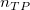
: 真の正の判定数/math-254cedc4e5a3c839360558b23ca648c2.png "n_{FN}\,\!") : 偽の負の判定数
: 偽の負の判定数
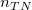
: 真の負の判定数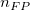
: 偽の正の判定数: 負の実際の状態を持つケースの数
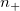
: 正の実際の状態を持つケースの数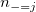
: 結果が～に等しい負のケースの数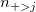
: : 結果が～より大きい正のケースの数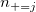
: : 結果が～に等しい正のケースの数/math-962c20beac8eb76e37067599eefebfda.png "n_{-<j}\,\!") : : 結果が～より小さい負のケースの数
: : 結果が～より小さい負のケースの数
1- 特異性 (X): /math-0c5a60aa9d534a69c504fac187790c07.png "1-\frac{n_{TN}}{n_{TN}+n_{FP}}\,\!")
敏感度 (Y):
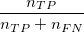
/math-6373accf16c083723e8abae2f5401af2.png "x\,\!") を検定結果変数の状態値とします。は、 値が負の実際の状態値で、
を検定結果変数の状態値とします。は、 値が負の実際の状態値で、
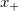
は値が正の実際の状態値です。そして、ROC曲線以下の"true"面積のノンパラメトリック近似性、/math-0a5000fe8b6b5570dd5a1ce00b828ef6.png "\theta \,\!") は下記のようになります。
は下記のようになります。
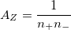
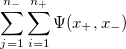
ここでは、 +のサンプルサイズ、 !は、 -のサンプルサイズで、以下のようになります。
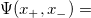
/math-3fd91dcf034941370a5ed5d855390a84.png "\begin{cases}
1, & \mbox{if }x_{+}>x_{-} \\
0.5, & \mbox{if }x_{+}=x_{-} \\
0, & \mbox{if }x_{+}<x_{-}
\end{cases}")
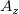
は、ROC曲線以下の観測された面積で、このROC曲線は、連続したポイントを台形法などにより直線で接続したものです。を計算する別の方法は、以下のようになります。
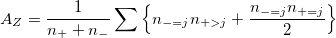
の標準偏差は、次の式で計算できます。
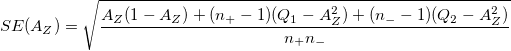
ここで
![Q_{1=\frac 1{n_{-}n_{+}^2}}\sum n\__{=j}[n_{+>j}^2+n_{+>j}n_{+=j}+\frac{n_{+>j}^2}3] \,\!](../images/Algorithm_(ROCCurve)/math-99adafc3fccb24a1cf7264ad44e4e60a.png "Q_{1=\frac 1{n_{-}n_{+}^2}}\sum n\__{=j}[n_{+>j}^2+n_{+>j}n_{+=j}+\frac{n_{+>j}^2}3] \,\!")
および
![Q_{2=\frac 1{n_{-}^2n_{+}}}\sum n_{+=j}[n_{->j}^2+n_{->j}n_{-=j}+\frac{n_{-=j}^2}3] \,\!](../images/Algorithm_(ROCCurve)/math-aafdd6330c76e9cd18c4af812cd53052.png "Q_{2=\frac 1{n_{-}^2n_{+}}}\sum n_{+=j}[n_{->j}^2+n_{->j}n_{-=j}+\frac{n_{-=j}^2}3] \,\!")
ROC曲線以下の真の面積に対する2方向の漸近の信頼区間/math-76c3dffd80c7fb9b863984e4f4d30b71.png "c\%=(100-\alpha )\%\,\!") は
は
/math-235de6eb21ed53705c7979a6ce5fb929.png "A_Z\pm SE(A_Z)\,\!")
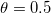
であるのに対し、 対立仮説は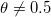
は、 であるような帰無仮説において漸近的に標準なので、 であるような帰無仮説の漸近のP値を計算できます。それに対し、対立仮説は
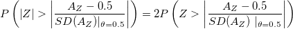
ノンパラメトリックな場合において、
/math-72938a409015c7ed5745f164b9c6bd99.png "SD(A_Z)|_{\theta =0.5}=\sqrt{\frac{\theta (1-\theta )+(n_{+}-1)(Q_1-\theta ^2)+(n_{-}-1)(Q_2-\theta ^2)}{n_{+}n_{-}}}|_{\theta =0.5}\,\!")
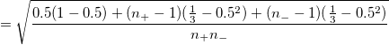
カットポイント値は、これら2つの量の等価性の最大化（SpEqualSe）によって定義されます。これは、ROC曲線のmin（abs(1-x-y)）です。